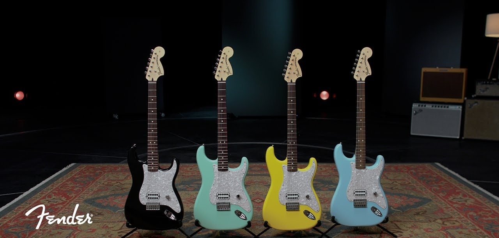

El origen secreto de la Fender Stratocaster

La Fender Stratocaster es probablemente la guitarra eléctrica más reconocida del planeta. Sin embargo, en 1954 no fue diseñada pensando en las distorsiones del rock ni en estadios llenos, sino en la comodidad de los músicos de música Country y Swing.
1. Diseñada para tocar horas de pie
Leo Fender escuchó las quejas de los guitarristas de la época que usaban la Telecaster. Pedían un instrumento con bordes redondeados que no hincara las costillas tras largas horas de actuación. Así nacieron los míticos rebajes del cuerpo (*contour body*) de la Stratocaster.
2. El puente de trémolo que cambió la música
Otra gran innovación fue el sistema de trémolo sincronizado. Aunque originalmente buscaba imitar el sonido suave de la guitarra hawaiana, años más tarde guitarristas como Jimi Hendrix llevaron este mecanismo al límite para crear efectos psicodélicos nunca antes escuchados.
"La Stratocaster no intentaba seguir una tendencia: redefinió cómo debía verse y sonar una guitarra moderna."
3. De las bandas de Western al Olimpo del Rock
Artistas como Buddy Holly fueron los primeros en mostrarla en televisión, pero fueron David Gilmour, Eric Clapton y Stevie Ray Vaughan quienes consolidaron su estatus de leyenda con su característico tono brillante y cristalino en las pastillas intermedias.
¿Quieres probar una Stratocaster?
En Sonido Vivo disponemos de modelos con configuración clásica de 3 pastillas simples y amplificadores a tubos para que sientas la verdadera versatilidad de este icono.
Ver guitarras disponibles